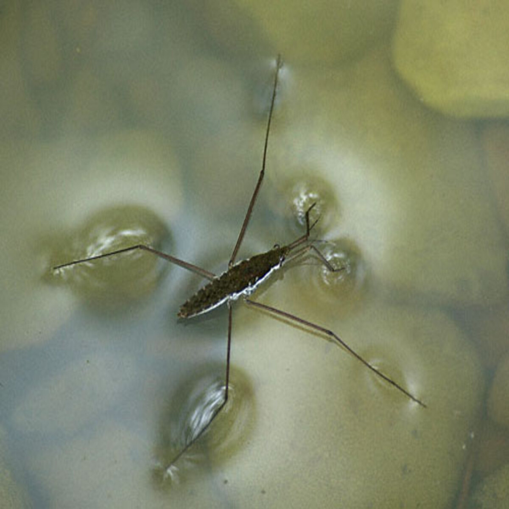

Surface tension is the tendency of liquid surfaces to shrink into the minimum surface area possible. All liquids have a surface tension, but because of the relatively high attraction of water molecules to each other through a web of hydrogen bonds, water has a higher surface tension than most other liquids. Surface tension is what allows heavier than water i.e., denser than water objects such as razor blades, insects (e.g. water striders), to float and slide on a water surface without becoming even partly submerged.
Flotation of objects denser than water occurs when the object is nonwettable and its weight is small enough to be borne by the forces arising from surface tension.[4] For example, water striders use surface tension to walk on the surface of a pond in the following way. The nonwettability of the water strider's leg means there is no attraction between molecules of the leg and molecules of the water, so when the leg pushes down on the water, the surface tension of the water only tries to recover its flatness from its deformation due to the leg. This behavior of the water pushes the water strider upward so it can stand on the surface of the water as long as its mass is small enough that the water can support it. The surface of the water behaves like an elastic film: the insect's feet cause indentations in the water's surface, increasing its surface area[6] and tendency of minimization of surface curvature (so area) of the water pushes the insect's feet upward.
